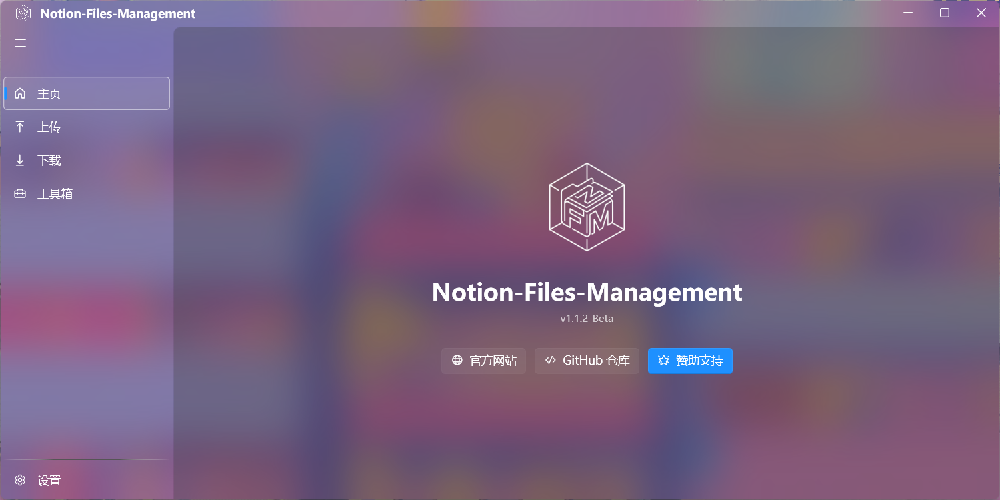

准备好体验极致文件管理了吗？
开源免费，无需安装 Python 环境。下载即用，支持 Windows 10/11 x64 平台。
// version.json
Loading...
_
智能探测文件大小，支持多线程并发下载。覆盖全部 Notion 媒体类型，链接过期自动刷新。
自动检测文件类型，使用原生块挂载。队列管理，实时进度反馈。
丰富的 Notion 批量操作工具集，覆盖页面信息查询、数据迁移、批量编辑等场景。
从远端拉取公告索引与 Markdown 正文，卡片流式布局内联渲染，本地缓存与离线回退。
主题色与背景材质深度自定义，打造专属工作空间。
启动时静默检查新版本，一键自动更新。配置持久化，跨版本无缝迁移。
| 层次 | 技术 | 版本 | 用途 |
|---|---|---|---|
| 前端框架 | WPF | .NET 8.0 | 现代化桌面 UI 框架 |
| UI 组件库 | WPF-UI | 4.2.0 | 现代化 UI 组件 |
| Python 桥接 | pythonnet | 3.0.5 | C# 调用 Python 代码 |
| Python 运行时 | Python Embedded | 3.11 | 内嵌 Python 环境 |
| Markdown 渲染 | MdXaml | 1.27.0 | 公告系统 Markdown 转 FlowDocument |
| 后端逻辑 | Python Scripts | 3.11+ | 文件传输与 Notion API |
开源免费，无需安装 Python 环境。下载即用，支持 Windows 10/11 x64 平台。
Loading...